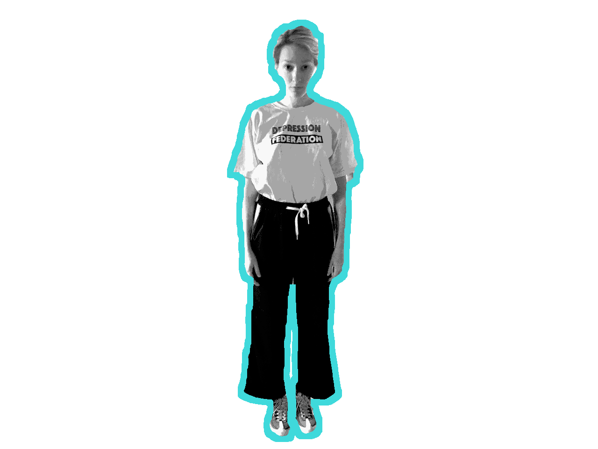
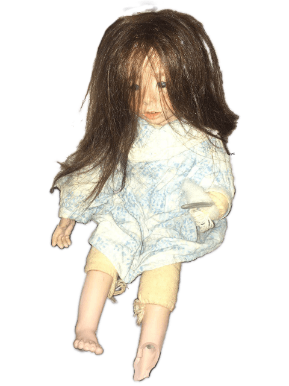

Last Events

Tentacles /performance/ — 2019-11-09
/hi//what does this body make?// From the perspective of hyperverities, chthonic “abominations with many tentacles (polytendriled abominations)” - “Unspoken” (Unuttera) that awaits us at the end of the story, is leading the story.
Extremophile Body /performance/ — 2019-08-29
An extremophile is an organism that thrives in extreme environments. How does our social body live today? What it feels and requires? How does the body loose its information nowadays?
Schizoid Children /performance/ — 2019-08-23
Witch, monster, alien and a cyborg - each passes the line between fiction and contextual reality, stereotype and fear, oppression and powerful power at the same time. Everyone has the ability to change the form of their choice, to scare their tormentors, to find power in a strange world.
Friction /workshop/ — 2019-08-23
Friction is a movement research based on the Schizoid Children conception.
Raving Gagarin /performance/ — 2019-06-29
Raving Gagarin choreography project is based on the rave history in USSR in 90-s. The rave culture in the USSR was born in the period of relative freedom of the late 80s and early 90s.